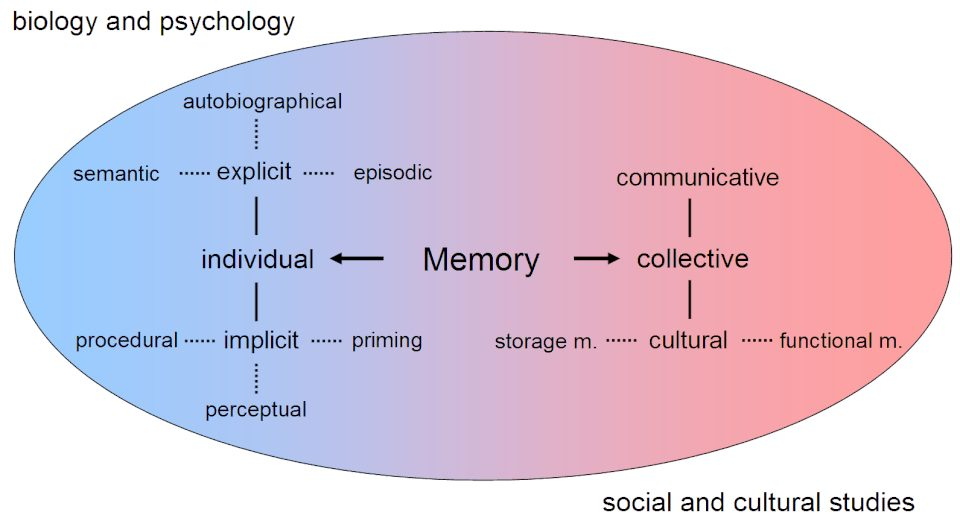

General information only. It does not replace advice from a health professional. For sudden neurological symptoms, call emergency services.


Forgetting is normal
Memory is not perfect at any age. Forgetting where you left your keys, why you walked into a room or the name of an actor "on the tip of your tongue" happens to everyone. With age, the brain also becomes slower at learning and retrieving information, and doing several things at once gets harder. That is part of normal ageing and does not mean you are developing dementia. See memory.
Normal ageing or something more
| Normal with age | May indicate a problem |
|---|---|
| Forgetting a name and remembering it later | Forgetting important recent conversations or events |
| Losing your keys now and then | Putting things in odd places and never finding them |
| Forgetting an appointment and remembering it later | Repeating the same questions or stories |
| Taking a moment to find a word | Often struggling to follow a conversation or name objects |
| Needing a diary | Being unable to manage money, medication or familiar recipes |
| Getting confused in a new place | Getting lost in familiar places |
| Being aware of the lapses and complaining about them | The lapses being noticed more by others than by the person |
Other signs: changes in personality or mood, apathy, giving up hobbies, difficulty planning or making decisions.
Many causes of forgetfulness are treatable
Before thinking of Alzheimer's, common treatable causes should be ruled out:
- Anxiety, stress and depression: very common causes of lapses in attention and memory.
- Poor sleep or sleep apnoea.
- Medicines: benzodiazepines, some antihistamines, medicines for urinary incontinence, opioid painkillers.
- Vitamin B12 deficiency or thyroid problems.
- Alcohol.
- Uncorrected hearing or vision loss.
- Infections, especially in older people, which can cause acute confusion.
When to see a doctor
Make an appointment with your doctor if the lapses:
- Are new and getting worse.
- Affect your daily life, work or relationships.
- Are noticed by your family.
The doctor will talk with you, do some brief cognitive tests and blood tests, and refer you to neurology if needed. Bringing someone who knows you well helps a lot.
If it is decline, knowing early helps
An early diagnosis allows reversible causes to be treated, treatments that work better in the early stages (such as the new anti-amyloid antibodies) to be started, the future to be planned and support to be accessed. See mild cognitive impairment and Alzheimer's disease.
Protecting your memory
Up to 45% of dementia cases could be delayed or prevented by controlling factors such as blood pressure, hearing, cholesterol, smoking, physical inactivity and social isolation. See the 14 risk factors for dementia.
Sources
- Livingston G, et al. Dementia prevention, intervention, and care: 2024 report of the Lancet standing Commission. Lancet. 2024;404:572-628.
- Alzheimer's Association. 10 early signs and symptoms of Alzheimer's.
- Petersen RC, et al. Practice guideline update summary: mild cognitive impairment. Neurology. 2018;90:126-35.
- Pasqual Maragall Foundation. Differences between normal forgetfulness and Alzheimer's (in Spanish).